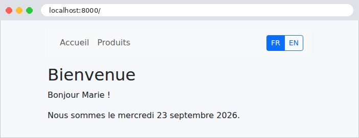
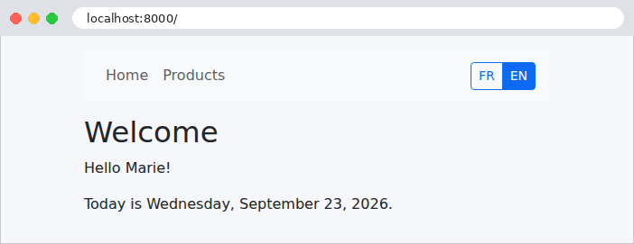

5. Internationalisation
Une application internationalisée affiche ses textes dans la langue de l'utilisateur. L'étude de cas est en français et en anglais. Le principe est simple : les gabarits contiennent des textes marqués comme « à traduire », et un dictionnaire par langue associe à chaque texte sa traduction. La langue choisie est mémorisée dans un cookie.
[Django] utilise pour cela [gettext], le système de traduction du projet GNU, que [Python] connaît aussi (module [gettext] de la bibliothèque standard), et que l'on retrouve dans de nombreux logiciels libres. Avec [gettext], la clé d'un texte est le texte lui-même, écrit dans la langue d'origine : un gabarit écrit [{% translate "Accueil" %}], et le dictionnaire anglais associe « Accueil » à « Home ». Une page reste ainsi lisible, et fonctionne, même sans dictionnaire : les textes s'affichent dans la langue d'origine. C'est une différence avec les versions [Symfony], [Laravel], [Flask], [Spring MVC], [ASP.NET Core MVC] et [NestJS] de l'étude de cas, qui utilisaient des clés abstraites ([MENU.ACCUEIL]). Les dictionnaires sont des fichiers texte, au format [.po] (Portable Object), que des outils savent extraire du code et que des logiciels de traduction savent éditer ; [Django] lit leur version compilée, les fichiers [.mo] (Machine Object). [gettext] sait aussi accorder un texte au pluriel, selon les règles de chaque langue. [Django] est d'ailleurs lui-même traduit ainsi : c'est grâce à ses dictionnaires que ses messages d'erreur sont en français depuis l'exemple 08. La mise en forme des dates et des montants reste celle de l'exemple 16.
5.1. Exemple 22 : une application en deux langues
5.1.1. La configuration : config/settings.py
- ligne 14 : la langue par défaut de l'application, celle d'une requête qui n'en précise pas (exemple 08). C'est aussi la langue des textes des gabarits : le français n'a donc pas besoin de dictionnaire ;
- lignes 15-18 : les langues que gère l'application ;
- ligne 20 : [LOCALE_PATHS], les dossiers où [Django] cherche les dictionnaires de l'application, en plus des dossiers [locale] de chaque application (dont ceux de [Django] lui-même). Chaque dictionnaire est rangé dans un dossier [<langue>/LC_MESSAGES], sous le nom [django.po] (et [django.mo]) : c'est l'organisation que demande [gettext] ;
- ligne 22 : le nom du cookie qui mémorise la langue choisie. [django_language] est la valeur par défaut ; nous l'écrivons pour qu'elle soit visible ;
- lignes 29-33 : le middleware [LocaleMiddleware] de [Django] remplace notre middleware [FixerLangue] de l'exemple 16. Pour chaque requête, il choisit la langue, parmi celles du réglage [LANGUAGES] : celle du cookie de la langue s'il en existe un ; à défaut, celle que préfère le navigateur, d'après l'entête [Accept-Language] (exemple 12) ; à défaut, [LANGUAGE_CODE]. Il l'active ([translation.activate], exemple 16), et la range dans [request.LANGUAGE_CODE]. Il ajoute enfin à la réponse l'entête [Content-Language] (la langue de la page), et l'entête [Vary: Accept-Language], qui prévient les caches que la réponse dépend de cet entête ;
- ligne 43 : le processeur de contexte [i18n] ajoute aux gabarits les variables [LANGUAGE_CODE] (la langue de la requête), [LANGUAGES] et [LANGUAGE_BIDI] (vrai pour une langue qui s'écrit de droite à gauche).
5.1.2. Le dictionnaire : locale/en/LC_MESSAGES/django.po
Un fichier [.po] est une suite d'entrées, séparées par des lignes vides :
- lignes 1-4 : un commentaire ;
- lignes 5-11 : l'entrée d'en-tête : un texte vide ([msgid ""]), dont la « traduction » ([msgstr]) contient les informations du dictionnaire : la langue, le jeu de caractères, et la règle du pluriel de la langue ([Plural-Forms] : en anglais, deux formes, la seconde pour tout nombre différent de 1) ;
- lignes 13-15 : une entrée ordinaire : [msgid] est le texte d'origine, tel qu'il est écrit dans le gabarit ; [msgstr] sa traduction. La ligne [#:] indique où le texte a été trouvé (un gabarit et une ligne) : c'est un commentaire, pour le traducteur ;
- lignes 25-28 : un texte qui contient une variable. Dans le dictionnaire, une variable s'écrit [%(nom)s] (la syntaxe des chaînes de format de [Python], exemple 10) ; la ligne [#, python-format] le signale aux outils. La traduction peut déplacer la variable, ou changer la ponctuation qui l'entoure (le point d'exclamation n'est pas précédé d'une espace en anglais) ;
- lignes 47-52 : un texte au pluriel : [msgid] est la forme au singulier, [msgid_plural] la forme au pluriel, et chaque forme de la traduction est numérotée ([msgstr[0]], [msgstr[1]]), dans l'ordre que fixe la règle [Plural-Forms]. En français, 0 et 1 sont au singulier, alors qu'en anglais 0 est au pluriel (« 0 products ») : [gettext] le sait, grâce à cette règle. C'est un progrès sur le « produit(s) » des versions précédentes de l'étude de cas.
On n'écrit pas ce fichier à la main. La commande :
parcourt les gabarits et le code [Python] du projet, en extrait tous les textes marqués « à traduire », et crée ou met à jour le fichier [locale/en/LC_MESSAGES/django.po] : les nouveaux textes y sont ajoutés, avec une traduction vide, et les traductions déjà faites sont conservées. Il ne reste qu'à écrire les traductions, dans un éditeur de texte, ou dans un logiciel spécialisé ([Poedit], par exemple). La commande :
compile ensuite chaque fichier [.po] en un fichier [.mo], binaire, rapide à lire, qui est celui que [Django] utilise. Il faut relancer le serveur après une compilation : les dictionnaires sont chargés une fois pour toutes. Ces deux commandes utilisent les programmes de [gettext] ([xgettext], [msgfmt]...), qu'il faut avoir installés (sous [Linux], le paquet [gettext] ; sous [Windows], par exemple les binaires distribués sur le site mlocati.github.io). Le fichier [django.mo] étant fourni avec l'exemple, il n'est pas nécessaire de les installer pour l'exécuter.
5.1.3. Le choix de la langue : les routes et les vues
- ligne 12 : [re_path] décrit une route par une expression régulière, plutôt que par la syntaxe de [path] (exemple 02). [^] et [$] marquent le début et la fin du chemin ; [(?P<code>fr|en)] est un groupe nommé : le texte qu'il reconnaît, [fr] ou [en] (la barre verticale signifie « ou »), est passé à la vue dans le paramètre [code]. Une autre langue ne correspond à aucune route : [/langue/de] donne une erreur 404.
- lignes 14-25 : les vues de l'accueil et des produits ne savent rien de la langue : elles fournissent des données brutes (un nom, une date, des montants en centimes). La traduction et la mise en forme sont l'affaire des gabarits. La classe [Produit] a un nom et un prix en centimes ; la bibliothèque [formats] est celle de l'exemple 16 : son filtre [date_longue] écrit une date au format « complet » de la langue active (« mercredi 23 septembre 2026 », « Wednesday, September 23, 2026 »), et son filtre [monnaie] un montant ;
- lignes 30-37 : la vue du changement de langue répond par une redirection vers la page d'où vient l'utilisateur : celui-ci retrouve sa page, dans la nouvelle langue ;
- lignes 35-36 : la réponse porte un cookie, que le navigateur renverra à chaque requête. [set_cookie] reçoit son nom, sa valeur, et ses options : [max_age], sa durée de vie en secondes (un an) ; [httponly=True] le rend invisible au [JavaScript] de la page ; [samesite="Lax"] interdit au navigateur de l'envoyer avec une requête POST venue d'un autre site. Il est ajouté à la réponse sous la forme d'un entête [Set-Cookie] ;
- lignes 43-49 : la page d'origine est donnée par l'entête [Referer] de la requête (l'orthographe fautive, avec un seul [r], est celle de la norme HTTP), que le navigateur remplit avec l'URL de la page qui contenait le lien. Mais cet entête vient du client, qui peut y mettre n'importe quoi. Rediriger aveuglément vers cette adresse ferait de notre application un redirecteur ouvert (open redirect) : un lien piégé, qui porte notre nom de domaine, pourrait envoyer l'utilisateur sur un site malveillant. La fonction [url_has_allowed_host_and_scheme] de [Django] ([django.utils.http]) vérifie qu'une adresse est relative, ou qu'elle désigne l'une des machines permises (ici, celle de la requête : [request.get_host()]) ; sinon, on revient à l'accueil.
[Django] fournit d'ailleurs une vue toute faite pour changer de langue, [django.views.i18n.set_language], qui fait le même travail à partir d'un formulaire POST ; nous avons écrit la nôtre pour la montrer, et pour changer de langue par un simple lien.
5.1.4. Traduire dans les gabarits
- ligne 4 : l'attribut [lang] de la page indique sa langue aux navigateurs, aux moteurs de recherche et aux lecteurs d'écran ; [LANGUAGE_CODE] est la langue de la requête, fournie par le processeur de contexte [i18n] ;
- ligne 9 : le titre de la page est fourni par la page elle-même, déjà traduit (bloc [titre]).
- ligne 2 : les balises de traduction sont dans la bibliothèque [i18n], que chaque gabarit doit charger (exemple 16) ;
- lignes 6-7 : la balise [{% translate %}] rend la traduction d'un texte, dans la langue de la requête (ou le texte lui-même, s'il n'a pas de traduction) ;
- lignes 10-17 : la balise [{% get_available_languages %}] range dans une variable les langues du réglage [LANGUAGES], des couples (code, nom), que la boucle décompose ([for code, nom in langues]). Un bouton par langue, qui mène à la vue [/langue/<code>]. La langue courante est mise en évidence ([btn-primary], bouton plein).
- ligne 4 : le bloc [titre], traduit, pour le gabarit parent ;
- ligne 9 : la balise [{% blocktranslate %}] traduit un texte qui contient des variables : [{{ nom }}] y devient [%(nom)s] dans le dictionnaire. Seules des variables simples y sont permises (ni filtre, ni point) ;
- ligne 11 : une variable calculée ne peut donc entrer dans le texte que par [with] : la date, mise en forme dans la langue de la requête par le filtre [date_longue], est rangée dans la variable [date] du texte.
- ligne 15 : le filtre [monnaie], dont le résultat dépend de la langue ;
- ligne 21 : le pluriel. [count n=produits|length] donne le nombre qui choisit la forme ([length], exemple 14) ; la balise [{% plural %}] sépare la forme au singulier de la forme au pluriel, écrites dans la langue d'origine. Les noms des produits, eux, ne sont pas traduits : ce sont des données, qui, dans une vraie application, viendraient d'une base de données.
Hors des gabarits, on traduit par les fonctions du module [django.utils.translation] : [gettext("Accueil")] (souvent importée sous le nom court [_] : [_("Accueil")]), [ngettext] pour le pluriel, et [gettext_lazy], une traduction « paresseuse », faite seulement au moment où le texte est utilisé : c'est celle qu'il faut pour un texte défini au chargement d'un module (le libellé d'un champ de formulaire, par exemple), quand la langue de la requête n'est pas encore connue. L'étude de cas l'utilise.
5.1.5. Exécution
La page d'accueil, en français (la langue par défaut), puis en anglais après un clic sur le bouton « EN » :


La page des produits, dans les deux langues. Les montants suivent les conventions de chaque langue :


Le changement de langue, observé avec [curl]. L'option [-H] fournit l'entête [Referer] qu'enverrait le navigateur :
La redirection ramène à la page d'origine, et le cookie est déposé pour un an. La réponse elle-même est encore en français ([Content-Language: fr]) : la langue n'a été choisie qu'à l'arrivée de la requête, avant que le cookie n'existe. Un [Referer] qui désigne un autre site ne permet pas d'y être redirigé :
L'utilisateur revient à l'accueil, et reste chez nous. Enfin, la page d'accueil, demandée avec le cookie [django_language=en] (option [-b] de [curl]) :
Le cookie n'est pas signé : il circule en clair, et l'utilisateur peut le modifier. Ce n'est pas un problème : il ne contient rien de secret, et [LocaleMiddleware] n'accepte que les langues du réglage [LANGUAGES]. L'exemple suivant revient sur la confiance qu'on peut accorder à un cookie. Sans cookie, [LocaleMiddleware] lit l'entête [Accept-Language] du navigateur : [curl -H "Accept-Language: en-US,en;q=0.9" http://localhost:8000/] rend la page en anglais. Les deux mécanismes se combinent ainsi naturellement : la langue du navigateur à la première visite, puis celle que l'utilisateur a choisie. Une troisième façon, fréquente, place la langue dans l'URL ([/en/produits]) : la fonction [i18n_patterns] de [Django] préfixe alors les routes par la langue, et [LocaleMiddleware] la lit dans le chemin. L'étude de cas s'en tient au cookie.